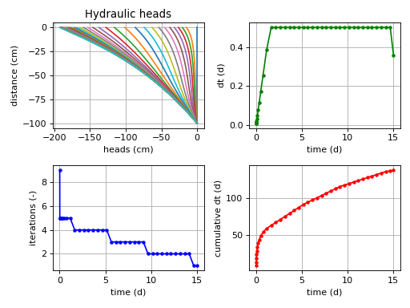
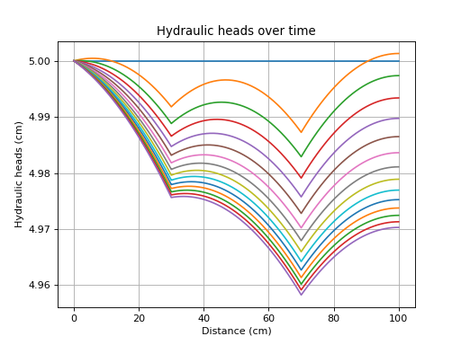

What is this Flow software package for?¶
- what
Definition of this software package.
- how
This is a module built for Python
- what not
This is not a complete full dimensional flow simulator.
- Which
Calculation techniques are used in this software package.
Unsaturated flow example¶
>>> # Necessary imports
>>> from waterflow.flow1d.flowFE1d import Flow1DFE
>>> from waterflow.utility import conductivityfunctions as condf
>>> from waterflow.utility import fluxfunctions as fluxf
>>> from waterflow.utility.helper import initializer
>>> from waterflow.utility.spacing import biasedspacing
>>> from waterflow.utility.plotting import solverplot
>>> # Select soil 13 from The Staringreeks
>>> soil, *_ = condf.soilselector([13])[0]
>>> theta_r, theta_s, ksat, alpha, n = (soil.t_res, soil.t_sat, soil.ksat, soil.alpha, soil.n)
>>> # Field's discretization
>>> L = 100
>>> nx = 51
>>> xsp = biasedspacing(nx, power=1, rb=-L)[::-1]
>>> initial_states = np.repeat(0, nx)
>>> # Prepare functions with soil specific values
>>> theta_h = initializer(condf.VG_pressureh, theta_r=theta_r, theta_s=theta_s, a=alpha, n=n)
>>> conductivity_func = initializer(condf.VG_conductivity, ksat=ksat, a=alpha, n=n)
>>> storage_change = initializer(fluxf.storage_change, fun=theta_h)
>>> # Define and solve the model
>>> M = Flow1DFE('Unsaturated transient model')
>>> M.set_field1d(nodes=xsp)
>>> M.set_gaussian_quadrature(2)
>>> M.set_initial_states(initial_states)
>>> M.set_systemfluxfunction(fluxf.richards_equation, kfun=conductivity_func)
>>> M.add_dirichlet_BC(0.0, 'west')
>>> M.add_neumann_BC(-0.3, 'east')
>>> M.add_spatialflux(-0.01, 'extraction')
>>> M.add_pointflux(-0.03, -5.5, 'pflux')
>>> M.add_spatialflux(storage_change)
>>> M.tfun = theta_h
>>> M.solve(dt=0.01, end_time=15)
>>> M.transient_dataframeify()
>>> # Plot summary information
>>> M.summary()
Id: Unsaturated transient model
System length: 100.0
Number of nodes: 51
Gauss degree: 2
kfun: VG_conductivity
tfun: VG_pressureh
BCs: west value: 0.0 and of type Dirichlet, east value: -0.3 and of type Neumann
Pointflux: pflux
Spatflux: extraction, storage_change
Runtime (s): 2.1232735999999477
# Balance
pnt-pflux -0.030000
spat-extraction -1.000000
storage_change 0.004666
internal -0.006175
all-spatial -1.000000
all-points -0.030000
all-external -1.030000
net -0.001508
>>> # Create plots
>>> solverplot(M)
>>> plt.tight_layout()
>>> plt.show()
(Source code, png, hires.png, pdf)
{kind=link}
{kind=link}

Saturated flow example¶
>>> # Necessary imports
>>> import matplotlib.pyplot as plt
>>> import numpy as np
>>> from waterflow.flow1d.flowFE1d import Flow1DFE
>>> from waterflow.utility import fluxfunctions as fluxf
>>> from waterflow.utility.spacing import spacing
>>> from waterflow.utility.plotting import quickplot
>>> # Define discretization
>>> nx = 101
>>> L = 100
>>> # Focus nodal density around nodes 30 and 70
>>> xsp, _ = spacing(nx, L, linear=False, loc=[30, 70], power=5, weight=4)
>>> def kfun(x, s, ksat=7.5):
... """ Increasing conductivity to the right of the domain """
... return ksat + 0.0065*x
>>> # Model defintion
>>> M = Flow1DFE('Saturated transient model')
>>> M.set_field1d(nodes=xsp)
>>> M.set_initial_states(5.0)
>>> M.set_systemfluxfunction(fluxf.darcy_s, kfun=kfun)
>>> M.add_dirichlet_BC(5.0, 'west')
>>> M.add_neumann_BC(0.0, 'east')
>>> M.add_spatialflux(0.001, "recharge")
>>> M.add_pointflux(-0.05, 30, 'pflux1')
>>> M.add_pointflux(-0.07, 70, 'pflux2')
>>> M.add_spatialflux(fluxf.storage_change)
>>> M.solve(dt=0.01, dt_max=5, end_time=200)
>>> M.transient_dataframeify(invert=False, print_times=15)
>>> # Plotting
>>> fig, ax = plt.subplots()
>>> for key in M.dft_states.keys():
... quickplot(df=M.dft_states[key], x='nodes', y=['states'], ax=ax, xlabel='Distance (cm)',
... ylabel='Hydraulic heads (cm)', title='Hydraulic heads over time', legend=False)
>>> plt.show()
(Source code, png, hires.png, pdf)
{kind=link}
{kind=link}

Warning
Be aware of the system’s orientation change between saturated and unsaturated flow problems. The orientation rotates counter clockwise for 90 degrees which means that western and eastern boundaries become lower and upper boundaries respectively.